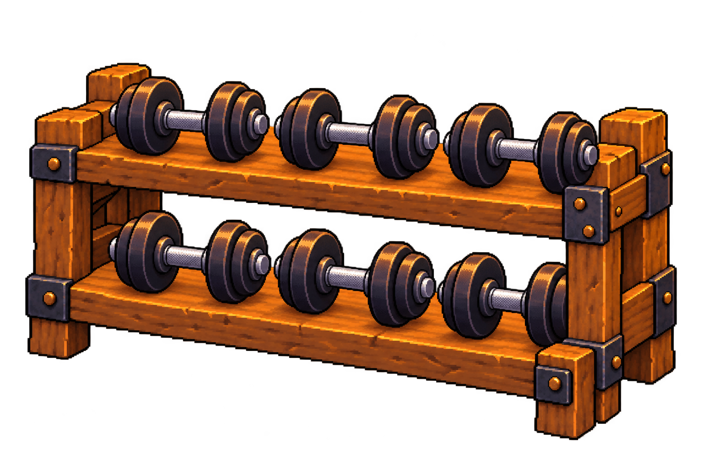
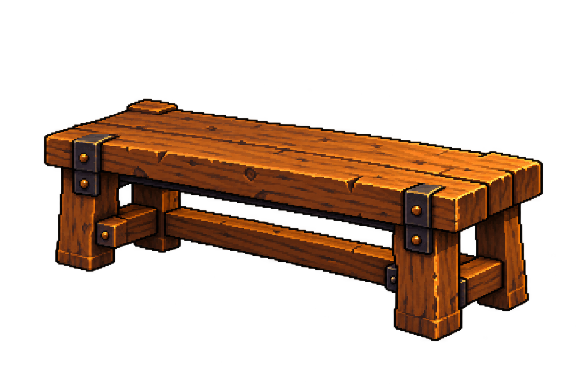
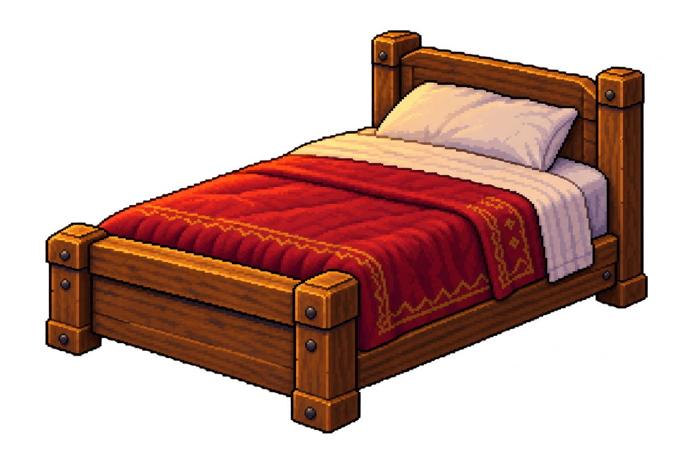
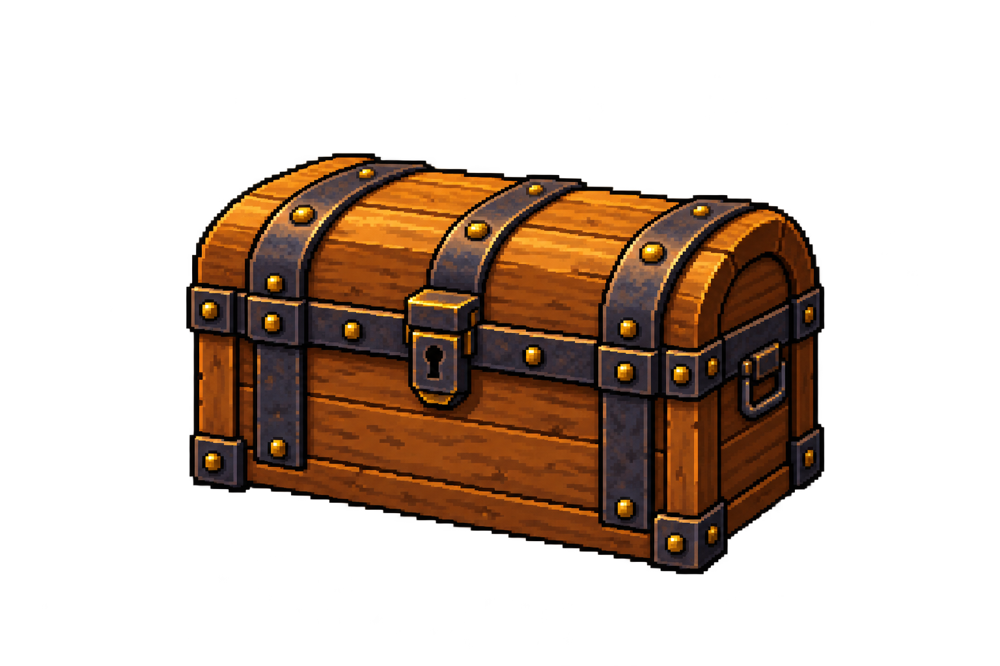

Weight rack, bench, bed and storage chest in one MR. Each image below is a separate single-object file. Built-in imagegen artwork, saved and exported through AutoSprite without paid background removal. Visual review pending.
Room positions and sizes are rough; the user will do the later manual alignment pass. Existing ring, bag and character are unchanged.
Actual Unity composition · Exact prompts · Sources, hashes and AutoSprite record

Use case: stylized-concept. Asset type: one isolated static weight-rack prop for a pixel-art fantasy fitness game in Unity. Input image: approved Home scene reference for art style and the weight rack design at the lower left; do not reproduce the scene. Primary request: recreate only that complete two-tier wooden dumbbell rack as one standalone furniture assembly. Thick warm worn oak beams and legs, dark iron corner straps with aged brass rivets, shallow front three-quarter view from slightly above, matching the reference camera. Six separate iron dumbbells, exactly three evenly spaced on each tier, all supported by the rack. Each dumbbell must have two symmetric stacks of round dark iron plates and one clearly visible short silver grip connecting those two stacks. All six grips must be visible. Leave clear gaps between neighboring dumbbells; never fuse their plates, never add a loose disconnected plate, never obscure a whole grip. The rack must be structurally coherent with both shelves and all support feet visible, including parts hidden by the plant and bench in the reference. Style: crisp 16-bit-inspired pixel clusters, dark pixel outline, restrained dithering, warm amber light, dark charcoal metal with small cool highlights, brown oak. Match the scene's fantasy workshop materials rather than modern tubular gym furniture. Composition: landscape 1536x1024, one centered complete object occupying about 1250x760 pixels, ample empty margin, no cropping. Transparent background with genuine alpha, including air gaps between weights and between the shelves and legs. No painted floor, cast ground shadow, room, bench, plants, bag, character, UI, writing or border. Do not provide a sheet of separate weights or multiple variants: this is ONE complete rack furniture asset.
Edit only the six weights in this rack reference. They currently look like stacks of plates with a protruding peg at one end, which is incorrect. Replace each with a complete classic dumbbell: one separate round iron plate stack on the LEFT END, one matching separate round iron plate stack on the RIGHT END, and a visibly exposed silver hand grip IN THE MIDDLE between the two stacks. Orient each dumbbell across the shelf LEFT TO RIGHT in image space so the middle grip is clearly seen between its two ends. Exactly six complete dumbbells, three per row, with empty gaps between neighboring dumbbells. Both ends plus center grip must be legible for every one. Adjust weight sizes to fit. Keep the exact wooden rack, camera, materials, lighting, pixel style and entire canvas framing. Output transparent background including gaps in the rack. No other objects, no scene, no text. One complete rack assembly.

Use case: stylized-concept. Create one isolated complete static room prop for a Unity fantasy pixel-art fitness app. Input image is the approved Home concept, for style and object design reference only. Match its crisp 16-bit-inspired pixel clusters, warm amber-lit oak and aged dark iron/brass, dark pixel outlines, restrained detail, shallow three-quarter view from slightly above. One whole object per image, all edges and supporting legs intact, transparent background with genuine alpha in every gap. No room, floor, cast floor shadow, plants, character, UI, writing, border or contact sheet. Subject: ONLY the wooden training bench at lower-left-center of the reference. A low rectangular thick worn oak plank seat with sturdy square legs, horizontal support braces, iron brackets and brass rivets. Long axis runs mostly left to right, with the right end slightly nearer the viewer. Bare bench only: omit the towel, bottle and all loose accessories so these can be separate later. No padded gym-machine design and no attached dumbbells. Landscape 1536x1024; center the single complete bench with generous transparent margins.

Use case: stylized-concept. Create one isolated complete static room prop for a Unity fantasy pixel-art fitness app. Input image is the approved Home concept, for style and object design reference only. Match its crisp 16-bit-inspired pixel clusters, warm amber-lit oak and aged dark iron/brass, dark pixel outlines, restrained detail, shallow three-quarter view from slightly above. One whole object per image, all edges and supporting legs intact, transparent background with genuine alpha in every gap. No room, floor, cast floor shadow, plants, character, UI, writing, border or contact sheet. Subject: ONLY the single bed in the right-middle of the reference. Sturdy oak frame and headboard, square bedposts, one ivory pillow, ivory sheet rim and an oxblood-red quilt with subtle gold edging. Complete mattress, folded upper quilt edge, sides and supporting feet. Headboard at upper right, foot end at lower left; match the reference's visible side and front corner. Bed and bedding form one complete furniture asset. No chest, desk, bedside table, lamp or other accessories. Landscape 1536x1024; center complete bed with generous transparent margins.

Use case: stylized-concept. Create one isolated complete static room prop for a Unity fantasy pixel-art fitness app. Input image is the approved Home concept, for style and object design reference only. Match its crisp 16-bit-inspired pixel clusters, warm amber-lit oak and aged dark iron/brass, dark pixel outlines, restrained detail, shallow three-quarter view from slightly above. One whole object per image, all edges and supporting legs intact, transparent background with genuine alpha in every gap. No room, floor, cast floor shadow, plants, character, UI, writing, border or contact sheet. Subject: ONLY the closed wooden storage chest sitting at the foot of the bed in the reference. Small sturdy warm oak treasure chest, rounded barrel lid, coherent dark iron bands crossing the lid and body, aged brass studs, one centered metal latch/keyhole. Shallow three-quarter view showing the broad front and right side. Keep all corners complete. Lid fully closed, no treasure, glow or particles. No bed, table or other accessories. Landscape 1536x1024; center complete chest with generous transparent margins.